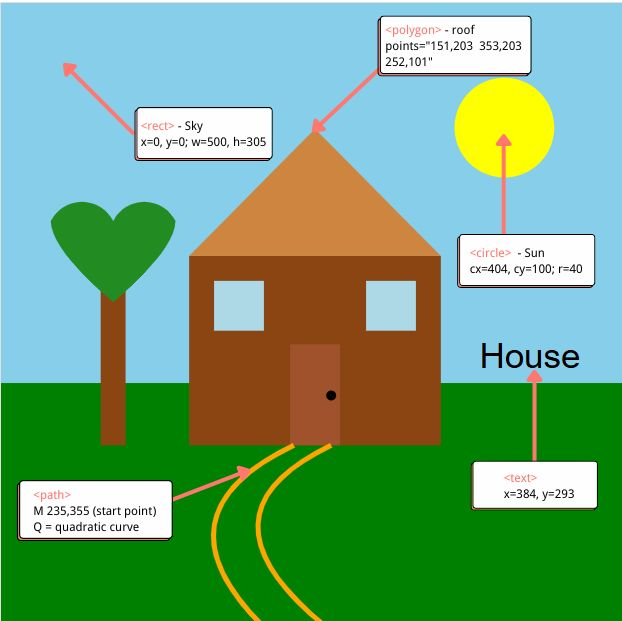
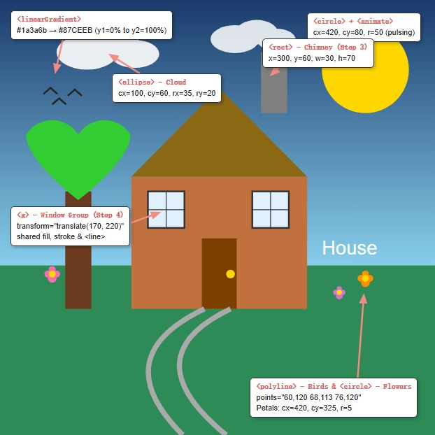

Draw SVGs
Exercise 4.1 — Creating and customising SVG shapes, understanding the coordinate system, and using the group element.
1. Customised SVG Picture — Before & After
The original picture (Before) was constructed using basic SVG primitives (<rect>,
<circle>, <polygon>, <path>, and <text>).
The customised version (After) adds enhanced visual styling, a linear gradient sky, a pulsing sun (<animate>),
clouds (<ellipse>), birds (<polyline>), a chimney (<rect>), flowers,
and groups both windows inside a <g> container with transform="translate(x, y)".
Figure 1: Rendered SVG drawings — Original (Before) and Customised (After).
2. SVG Coordinate System — Annotated Screenshots (Before & After)
SVGs use a 2D coordinate system with origin (0, 0) at the top-left corner,
where the x-axis increases to the right and the y-axis increases downwards.
The screenshots below annotate each element to demonstrate how the numerical coordinate values in code map to on-screen positions.


Figure 2: Annotated screenshots mapping code coordinates to canvas positions for both Before and After versions.
3. SVG Code — Before & After
The cards below show the complete SVG source code for both versions side by side. Code is formatted with indentation, monospace styling, and vertical scrolling.
<svg viewBox="0 0 500 500">
<!-- Sky -->
<rect width="500" height="305"
fill="#87CEEB" />
<!-- Grass -->
<rect y="305" width="500" height="195"
fill="#008000" />
<!-- Sun -->
<circle cx="404" cy="100" r="40"
fill="#FFFF00" />
<!-- Tree Trunk -->
<rect x="80" y="230" width="20"
height="125" fill="#8B4513" />
<!-- Tree Leaves -->
<path d="M 90 240 C 90 240 40 200
40 175 A 28 28 0 0 1 90 175
A 28 28 0 0 1 140 175
C 140 200 90 240 90 240 Z"
fill="#228B22" />
<!-- House Base -->
<rect x="151" y="203" width="202"
height="152" fill="#8B4513" />
<!-- House Roof -->
<polygon points="151,203 353,203 252,101"
fill="#CD853F" />
<!-- Left Window -->
<rect x="171" y="223" width="40"
height="40" fill="#ADD8E6" />
<!-- Right Window -->
<rect x="293" y="223" width="40"
height="40" fill="#ADD8E6" />
<!-- Door -->
<rect x="232" y="274" width="40"
height="81" fill="#A0522D" />
<!-- Doorknob -->
<circle cx="265" cy="315" r="4"
fill="black" />
<!-- Garden Path -->
<path d="M 235 355 Q 120 410 210 500"
fill="none" stroke="#FFA500"
stroke-width="4" />
<path d="M 265 355 Q 150 410 260 500"
fill="none" stroke="#FFA500"
stroke-width="4" />
<!-- Label -->
<text x="384" y="293"
font-size="28"
fill="black">House</text>
</svg><svg viewBox="0 0 500 500">
<defs>
<linearGradient id="skyGrad"
x1="0%" y1="0%"
x2="0%" y2="100%">
<stop offset="0%"
stop-color="#1a3a6b" />
<stop offset="100%"
stop-color="#87CEEB" />
</linearGradient>
</defs>
<!-- Sky with gradient -->
<rect width="500" height="305"
fill="url(#skyGrad)" />
<!-- Grass - richer green -->
<rect y="305" width="500" height="195"
fill="#2E8B57" />
<!-- Sun - moved + pulsing animate -->
<circle cx="420" cy="80" r="50"
fill="gold">
<animate attributeName="r"
values="45;52;45"
dur="3s"
repeatCount="indefinite" />
</circle>
<!-- Clouds using ellipse -->
<g fill="white" opacity="0.9">
<ellipse cx="100" cy="60"
rx="35" ry="20" />
<ellipse cx="130" cy="50"
rx="30" ry="18" />
<ellipse cx="155" cy="62"
rx="28" ry="16" />
</g>
<g fill="white" opacity="0.85">
<ellipse cx="270" cy="45"
rx="28" ry="16" />
<ellipse cx="295" cy="37"
rx="24" ry="14" />
<ellipse cx="318" cy="46"
rx="22" ry="13" />
</g>
<!-- Birds using polyline -->
<g stroke="#222" stroke-width="2"
fill="none">
<polyline points="60,120 68,113 76,120" />
<polyline points="78,110 86,103 94,110" />
<polyline points="50,108 58,101 66,108" />
</g>
<!-- Tree Trunk - wider -->
<rect x="75" y="220" width="30"
height="135" fill="#6B3A1F" />
<!-- Tree Leaves - brighter -->
<path d="M 90 230 C 90 230 30 185
30 155 A 35 35 0 0 1 90 155
A 35 35 0 0 1 150 155
C 150 185 90 230 90 230 Z"
fill="#32CD32" />
<!-- House Base - terracotta -->
<rect x="151" y="203" width="202"
height="152" fill="#C0713D" />
<!-- Chimney (Step 3) -->
<rect x="300" y="60" width="30"
height="70" fill="gray" />
<!-- House Roof - darker -->
<polygon points="151,203 353,203 252,101"
fill="#8B6914" />
<!-- Windows in a group (Step 4)
Parent <g> sets shared fill/stroke.
Each window uses its own
<g transform="translate">. -->
<g fill="#E0F0FF" stroke="#333"
stroke-width="2">
<g transform="translate(170, 220)">
<rect x="0" y="0"
width="42" height="42" />
<line x1="21" y1="0"
x2="21" y2="42"
stroke-width="1" />
<line x1="0" y1="21"
x2="42" y2="21"
stroke-width="1" />
</g>
<g transform="translate(290, 220)">
<rect x="0" y="0"
width="42" height="42" />
<line x1="21" y1="0"
x2="21" y2="42"
stroke-width="1" />
<line x1="0" y1="21"
x2="42" y2="21"
stroke-width="1" />
</g>
</g>
<!-- Door - darker brown -->
<rect x="232" y="274" width="40"
height="81" fill="#7B3F00" />
<!-- Doorknob - gold -->
<circle cx="265" cy="315" r="5"
fill="gold" />
<!-- Flowers on the grass -->
<g>
<circle cx="60" cy="320" r="5"
fill="#FF69B4" />
<circle cx="60" cy="310" r="4"
fill="#FF69B4" />
<circle cx="55" cy="315" r="4"
fill="#FF69B4" />
<circle cx="65" cy="315" r="4"
fill="#FF69B4" />
<circle cx="60" cy="315" r="4"
fill="#FFD700" />
</g>
<!-- Garden Path - light grey, thicker -->
<path d="M 235 355 Q 120 410 210 500"
fill="none" stroke="#aaa"
stroke-width="6" />
<path d="M 265 355 Q 150 410 260 500"
fill="none" stroke="#aaa"
stroke-width="6" />
<!-- Label - white on terracotta -->
<text x="370" y="293"
font-size="22"
fill="white">House</text>
</svg>4. Code Element Changes Summary
Every SVG element that was added, modified, or grouped between the original and customised versions.
| Element (SVG Tag) | Change Type | Before Code | After Code |
|---|---|---|---|
<linearGradient> in <defs> |
Added | None | Deep blue → sky blue gradient for the sky background |
<rect> — Sky |
Modified | fill="#87CEEB" |
fill="url(#skyGrad)" (uses gradient) |
<rect> — Grass |
Modified | fill="#008000" |
fill="#2E8B57" (richer green) |
<circle> — Sun |
Modified | cx="404" cy="100" r="40" fill="#FFFF00" |
Moved to cx="420" cy="80" r="50" fill="gold"; <animate> added for pulsing radius |
<ellipse> — Clouds |
Added (Step 3) | None | 2 clouds, each made of 3 overlapping <ellipse> elements grouped in <g> with opacity |
<polyline> — Birds |
Added (Step 3) | None | 3 birds drawn as V-shapes using <polyline points="…"> with fill="none" stroke="#222" |
<rect> — Tree Trunk |
Modified | x="80" y="230" width="20" height="125" fill="#8B4513" |
x="75" y="220" width="30" height="135" fill="#6B3A1F" (wider, taller, darker) |
<path> — Tree Leaves |
Modified | fill="#228B22" |
fill="#32CD32" (brighter lime green) |
<rect> — House Base |
Modified | fill="#8B4513" |
fill="#C0713D" (warmer terracotta) |
<rect> — Chimney |
Added (Step 3) | None | x="300" y="60" width="30" height="70" fill="gray" |
<polygon> — Roof |
Modified | fill="#CD853F" |
fill="#8B6914" (darker olive-brown) |
<g> — Window Group |
Added (Step 4) | Two separate <rect> elements with no shared styling |
Parent <g fill="…" stroke="…"> with two nested <g transform="translate(x,y)"> children |
<rect> — Windows |
Modified (Step 4) | fill="#ADD8E6" (no stroke) |
fill="#E0F0FF" stroke="#333" stroke-width="2" (inherited from parent <g>) |
<line> — Window Cross-bars |
Added (Step 4) | None | 4 × <line> (2 per window) inside each window <g> |
<rect> — Door |
Modified | fill="#A0522D" |
fill="#7B3F00" (darker brown) |
<circle> — Doorknob |
Modified | r="4" fill="black" |
r="5" fill="gold" |
<circle> — Flowers |
Added (Step 3) | None | 3 flowers on the grass; each flower uses 4 petal <circle> + 1 gold centre <circle> |
<path> — Garden Path |
Modified | stroke="#FFA500" stroke-width="4" |
stroke="#aaa" stroke-width="6" (light stone grey, thicker) |
<text> — Label |
Modified | fill="black" |
fill="white" (readable on terracotta wall) |